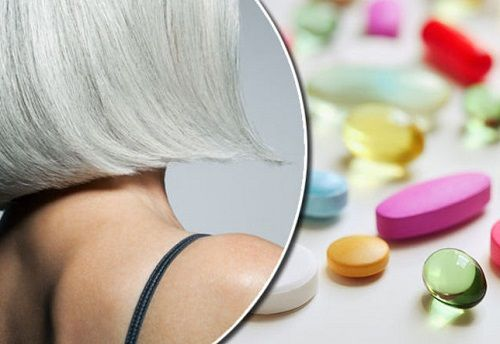

Определенные витамины и минералы помогают гарантировать, что ваши волосяные фолликулы вырабатывают пигменты (меланин), которые необходимы волосам для сохранения естественного цвета.
ИССЛЕДОВАНИЕ показало, что люди с преждевременно поседевшими волосами также имеют дефицит витамина D. Это открытие предполагает, что это питательное вещество также влияет на выработку меланина в волосяных фолликулах.
Минерал, который отвечает за защиту ваших клеток и ДНК от захватчиков. Также помогает организму вырабатывать белок. Дефицит цинка может повлиять на здоровье ваших волос.
Дефицит меди может препятствовать выработке энергии по всему телу, влияя на клетки крови и соединительные ткани. Этот минерал также помогает вашему телу усваивать железо и создавать новые клетки крови. Медь также играет роль в производстве меланина. Достаточное количество меди в вашем рационе может гарантировать, что эти процессы останутся нетронутыми.Ежедневная рекомендация для большинства взрослых - 900 мкг
Если у Вас низкий уровень железа может быть преждевременное поседение волос. Железо - важный минерал, который помогает создавать гемоглобин в клетках крови. Гемоглобин, в свою очередь, отвечает за перенос кислорода по всему телу. Если Вы вегетарианец или веган , убедитесь, что вы одновременно едите продукты, богатые витамином С, так как это помогает вашему организму усваивать больше железа.
Возможно, вы слышали о кератиновом лечении для выпрямления и разглаживания волос, но внутренний кератин также может повлиять на общее состояние ваших волос. Кератин - это тип белка, который присутствует в поверхностных клетках. Когда кератиновые белки расщепляются в волосяных фолликулах, это может, среди прочего, привести к выпадению волос и изменениям пигментации.
Жирные кислоты омега-3 могут помочь бороться с несколькими аутоиммунными заболеваниями, включая диабет 1 типа, ревматоидный артрит, язвенный колит, болезнь Крона и псориаз.
Дефицит витамина B-6, как правило, более заметен среди людей, которые не едят мясо. Витамин B-6 важен как для вашего метаболизма, так и для вашего иммунитета. Если вы не получаете достаточно витамина B-6, у вас могут развиться такие симптомы, как сухость волос, потрескавшиеся губы и усталость. Определенные аутоиммунные заболевания и заболевания почек также могут повлиять на усвоение витамина B-6 вашим организмом. Ежедневная рекомендация для большинства взрослых: 1,3 мг
Что касается здоровья волос, витамин B-9 может обеспечить правильную пигментацию. Если вы не едите достаточно продуктов, богатых фолиевой кислотой, возможно, вам стоит подумать о добавках. Ежедневная рекомендация для большинства взрослых: 400 мкг ‼️Не все поливитамины содержат витамин B-9, поэтому важно внимательно читать этикетки на продуктах. Ваш врач может даже порекомендовать отдельную добавку фолиевой кислоты.
Согласно ИССЛЕДОВАНИЯМ было обнаружено, что многие молодые люди с седыми волосами также могут иметь дефицит витамина B-12. ‼️ Вегетарианцы и веганы более склонны к дефициту B-12. Рекомендуемая суточная норма витамина B-12 для большинства взрослых: 2,4 мкг
Одно исследование показало, что участники с преждевременно поседевшими волосами имели более высокий уровень холестерина. Прием добавок рыбьего жира может быть одним из способов решения этой проблемы.
Многие считают, что добавки биотина делают волосы гуще и крепче. ОДНО ИССЛЕДОВАНИЕ также предполагает, что дефицит биотина может играть роль в преждевременном поседении. Ежедневная рекомендация для большинства взрослых: 30 мкг
Ферменты каталазы отвечают за расщепление перекиси водорода на воду и кислород. У некоторых людей есть состояние, называемое акаталаземией, которое вызывает низкий уровень этих ферментов. Со временем эти низкие уровни могут вызвать накопление токсинов в организме.